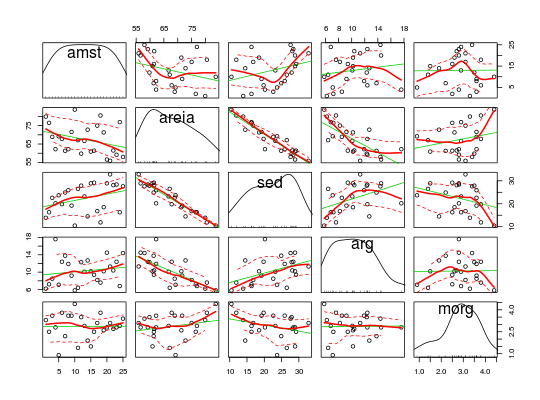

Dados de 25 amostras de determinado tipo de solo. Para cada amostra foram registradas as porcentagens de areia, sedimentos, argila e a quantidade de material orgânico.
Um data.frame com 25 observações e 5 variáveis, em que
amstareiasedargmorgMINGOTI (2005), pág. 73.
data(MingotiTb3.7)#> Warning: data set ‘MingotiTb3.7’ not foundstr(MingotiTb3.7)#> 'data.frame': 25 obs. of 5 variables: #> $ amst : int 1 2 3 4 5 6 7 8 9 10 ... #> $ areia: num 79.9 76.5 68.9 62.2 69.2 67.8 61.3 62.2 71.6 83.7 ... #> $ sed : num 13.9 16.3 22.6 20.2 23.7 19.8 24.9 25.9 19.2 10.5 ... #> $ arg : num 6.2 7.2 8.5 17.6 7.1 12.4 13.8 11.9 9.2 5.8 ... #> $ morg : num 3.3 2.5 3.6 2.8 0.9 3.8 2.2 3.6 3.6 4.4 ...library(car) scatterplotMatrix(~ amst + areia + sed + arg + morg, data = MingotiTb3.7)